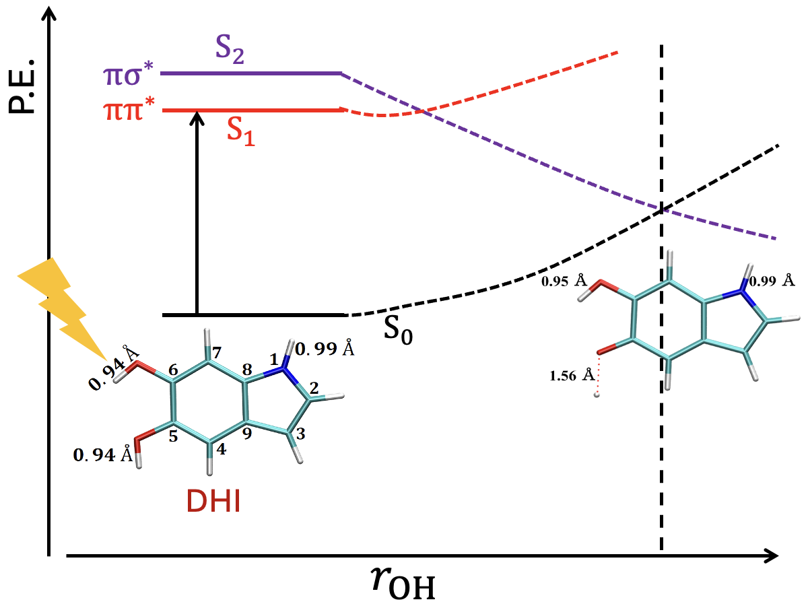
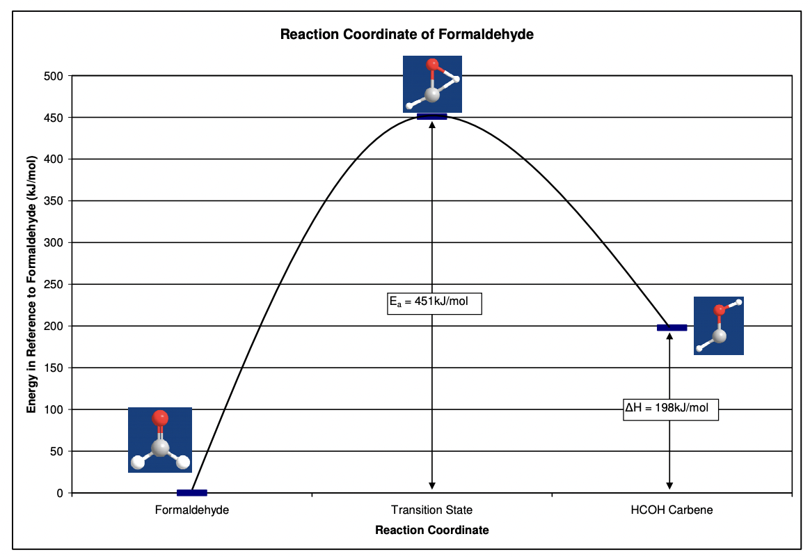
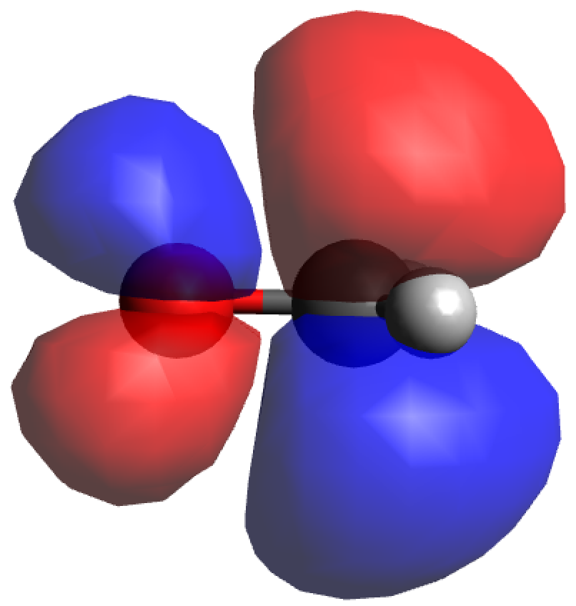
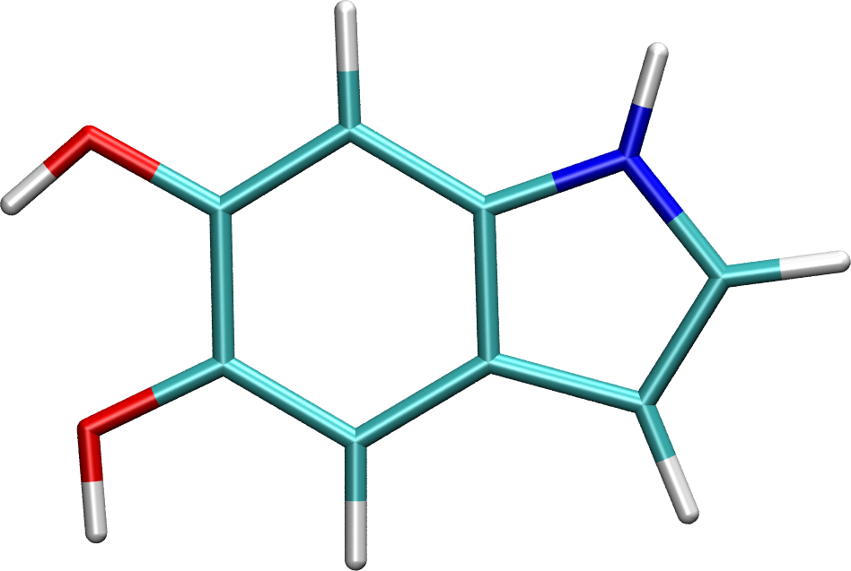
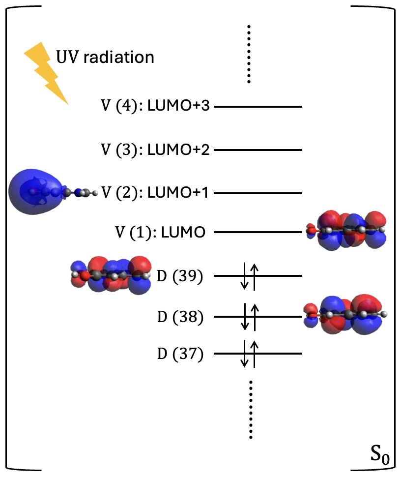

A computational study of the excited-state behavior of eumelanin monomers, identifying the optically bright states populated by UV absorption and the non-radiative pathways that return them to the ground state.

Eumelanin is a strong UV absorber, yet it dissipates the absorbed energy without structural damage, and a higher eumelanin fraction correlates with markedly lower skin-cancer risk. The objective was to characterize the excited states and deactivation mechanisms of its monomers.
Characterized the bright and dark low-lying states of DHI, MKI and DKI and established the conical-intersection methodology. Consistent with published studies, all three exhibit barrier-less deactivation pathways to the ground state. Extending the search to oligomers, I improved conical-intersection detection by 10%.
The computational workflow was first validated on formaldehyde: geometry optimization to the equilibrium structure, frequency analysis to confirm a true minimum (all real frequencies), isomer optimization to construct a potential energy surface, and molecular-orbital analysis of the valence space.


Eumelanin is an indole-based polymer. The monomers DHI and DHICA and the oxidized forms MKI and DKI were optimized at the B3LYP/cc-pVTZ level of theory, with each stationary point verified by frequency analysis.


TD-DFT vertical excitation energies were used to assign the character of each low-lying singlet state and to identify the optically bright state populated on UV absorption.
| Monomer | S₁ | S₂ | Bright |
|---|---|---|---|
| DHI | 4.65 eV ππ* | 4.99 eV πσ* | S₁ |
| MKI | 1.51 eV ππ* | 2.69 eV nπ* | S₁ |
| DKI | 1.67 eV nπ* | 1.91 eV ππ* | S₂ |
Because eumelanin shows negligible fluorescence, absorbed energy must be dissipated non-radiatively. Minimum-energy conical intersections (MECIs) between the excited and ground states were located, and the low-lying state energies were mapped from the Franck–Condon region to each MECI. A barrier-less path indicates efficient internal conversion (photoprotection); an energy barrier indicates a route toward photodamage. I extended this search to oligomers on the group's shared server using Lagrangian-multiplier-based optimization, improving conical-intersection detection by 10%.